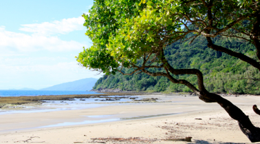

Statusrapport 1

Refleksioner efter den første måned
lørdag den 1. december 2007

Det er blevet d. 1. december, og det betyder at den første måned af vores store rejse nu er gået. Jeg har hjemmefra bestemt mig for at jeg vil gøre status ved hvert månedsskifte, og derfor er det nu tid til den første statusrapport.
Og det er faktisk svært at få armene ned af bare begejstring. Det har været en hel rigtig beslutning at tage afsted. På den ene side er den første måned gået utrolig hurtigt, men på den anden side har vi allerede oplevet så fantastisk mange ting, at det er vildt at forestille sig, at vi har hele 4 måneder tilbage. Thailand føles allerede som meget langt væk, og vi er så småt begyndt at kigge frem mod juleaften, hvor vi får besøg af mine svigerforældre Jytte og Per, som skal rejse med os i 3 uger, hvilket vi glæder os rigtig meget til.
Den første måned er også gået med at vænne sig til at rejse og til at være sammen i 24 timer. Det er gået væsentlig bedre end jeg nok havde frygtet. Vi hygger os rigtig godt og har stadig det første store skænderi til gode, og måske kommer det slet ikke, for det virker som om, at vi alle 4 i det store og hele tager rigtig meget hensyn til hinanden, vel vidende at der ikke er så mange steder at gå hen, hvis man bliver mopset.
Vi har brugt meget tid på planlægningen hjemmefra, og det har helt sikkert båret frugt. De få kiksere og uheld, vi har haft, har været hver gang vi har forsøgt at fravige den oprindelige plan eller den rådgivning, vi havde fået hjemmefra: Vores vandflyvertransport til Phi Phi, der endte som lidt af et drama til søs, og lidt for mange dage i regnskoven, hvilket vi fik ændret tilbage til de 3 dage, som Mogens havde rådet os til hjemmefra. Vi burde have lejet en bil oppe i Cape Tribulation, for det havde givet den frihed til at komme rundt, som vi savnede, og som vi har haft glæde af her i Cairns.
Helbredsmæssigt er vi sluppet utrolig godt fra den første måned (ja, jeg tør næsten ikke skrive det). Ingen dårlige maver 7 - 9 - 13, og forbavsende få myggestik. Viola har dog fået en infektion i hånden efter et stik i Thailand, og hun får helt sikkert et “minde for livet” i form af et større ar. Vi har passet godt på solen og ivrigt brugt faktor 30 plus UV beskyttende tøj, og det betyder at vi også er sluppet for solskoldninger på trods af, at solen har banket ubønhørligt ned på os.
Her i Cairns har vi tømt alle vores tasker og besluttet at sende de ting hjem, som vi ikke bruger. Det er nu ikke så mange ting, men vi har alligevel lidt for meget tøj med - specielt det lidt varmere tøj får vi ikke brug for før på New Zealand, og så må vi købe os til det der.
Jeg har jo slæbt rigtig meget teknikgrej med, og her følger en hurtig status på den del:
Vi har været rigtig glade for vores store spejlreflekskamera. Det tager bare suveræne billeder. Det er også en god ide med et lille lommekamera, som vi også har brugt meget. Men jeg burde have taget et med, der fungerede bedre under vandet, når vi nu har valgt at dykke så meget. Computeren har været et hit, men jeg skulle have taget en med, der kan brænde DVD´er, så vi kunne tage backup (det troede jeg også jeg havde, men den kan kun brænde CD´ere og de er for små i forhold til alle de billeder, vi tager). Det er en rigtig god ide at tage en masse film med til børnene, for det giver lige et frikvarter i ny og næ. Man kan ikke få harddisk nok! Den eksterne HD fungerer fint, men den indbyggede i computeren er alt for lille (60 Gb). Mp3 afspillere til børnene med musik og historier er rigtig gode til køreturene, og de medbragte minihøjttalere, gør det muligt at hygge med lidt god musik om aftenen. Videokameraet er lækkert, men HD video er for tungt til, at jeg kan redigere det på den medbragte computer, så redigeringen kommer til at foregå, når vi er hjemme. Navigatoren har vi kun brugt en gang indtil videre, men den skal vi nok også blive glade for. Generelt har vi brugt de ting vi har taget med, og der er ingen af tingene der ryger i papkassen hjem til Danmark.
Internetadgang er skønt link til den verden, vi er taget væk fra. På det seneste har vi dog været uden forbindelse. Det er også sjovt at prøve, men generelt vil vi foretrække at have muligheden for at gå på. og så selv styre forbruget, så næste gang vi skal rejse, kommer det på tjeklisten over ønsker til hoteller, vi skal bo på.
En terrasse, et ekstra værelse eller en anden mulighed for at vi kan være os selv, når børnene sover, er et andet must. Det undersøgte vi ret grundigt hjemmefra uden større held. MarcoPolo havde meget svært ved at booke den slags værelser til os, og det skal man altså prioritere.
Og når man har små børn, er en bil en rigtig god ting, hvis beliggenheden af hotellet ikke er den bedste. Ellers er det nemlig ret svært for os at komme nogen steder.
Og så er det vigtigt at lægge nogle dages pause ind mellem de forskellige etaper, dels for at vi alle kan fordøje indtrykkene og lade dem synke ned, og dels for at omstille sig fra en type rejse og oplevelse til en anden. Det var en fejl at tage direkte fra vores 7 dages sejltur og op i regnskoven. Vi skulle være blevet i Cairns et par dage og opladet batterierne, det havde givet en bedre oplevelse. Men det ved vi nu.
Alt i alt er den første måned forløbet utrolig godt. Vi har set og prøvet en masse skønne ting, som vi aldrig vil glemme, og vi glæder os til næste etape!
/Tim
Den første måned har budt på en utrolig masse skønne oplevelser, fantastisk natur og en vidunderlig tid sammen med familien.